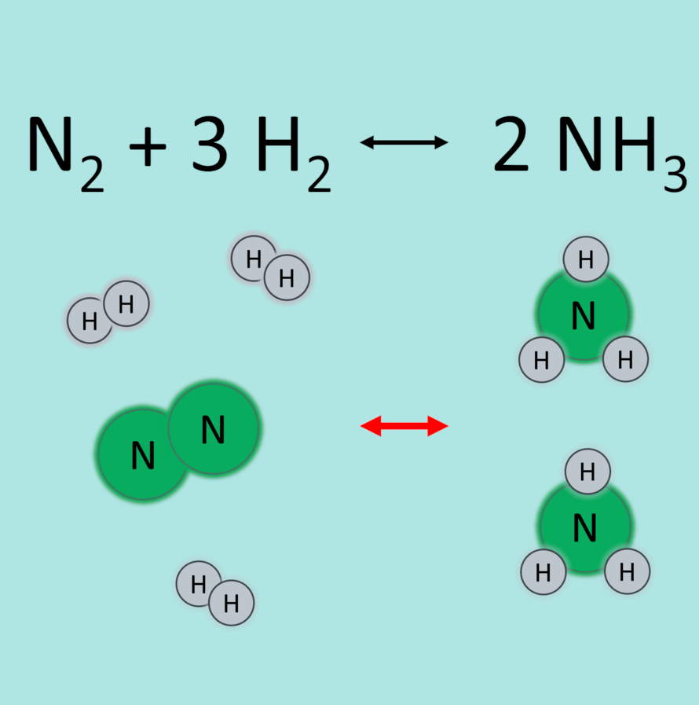
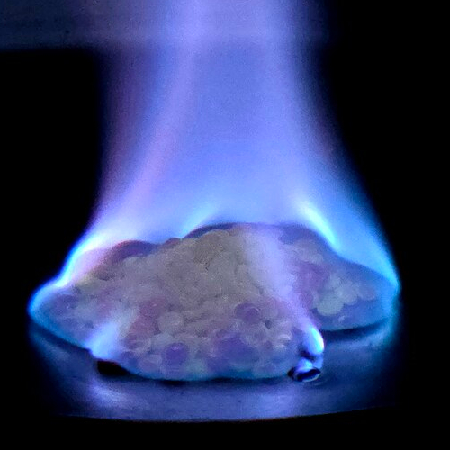
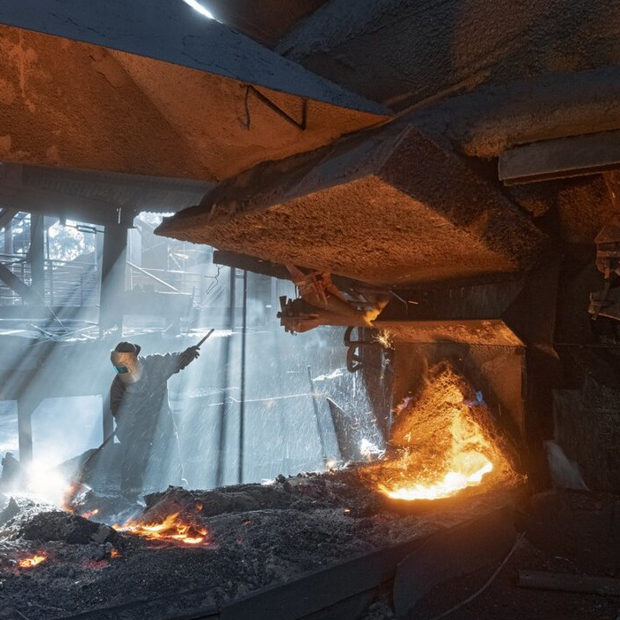
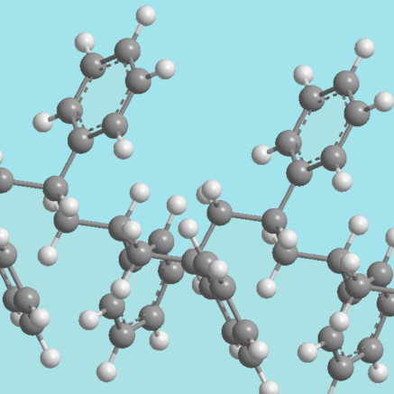

What is Chemistry
Chemistry is the science that explores how substances change. It studies atoms, molecules and materials and explains the processes that transform one substance into another.
At its core, chemistry is about chemical reactions, the rearrangement of atoms to create new substances with new properties. The reactions power industry, build materials, grow food and provide energy. Every product you use, every material around you, and every technological advance relies on chemists working behind the scenes.
Chemical reactions
Chemical reactions are processes where atoms in molecules are rearranged to form new substances. The atoms themselves stay the same, what changes are the chemical bonds that hold them together. When these bonds break and new ones form, the original substances transform into materials with different properties.
Reactions often need energy to begin, supplied as heat, light or electricity. Some reactions release energy (like combustion), while others absorb it. Many reactions are effectively irreversible under everyday conditions because once new bonds form, it takes significant energy or specialised equipment to undo them.
These transformations are at the heart of chemistry. They explain how raw materials become useful products, how fuels release energy, and how small molecules link together to create plastics and fibres.
Important chemical reactions that helped to change the world
The Haber Process

The Haber Process converts nitrogen into ammonia for fertilisers, enabling global food production.
Combustion

Combustion releases energy from fuels to power transport, heating and electricity.
Iron Smelting

Extracts iron from ore, producing steel for bridges, buildings and tools.
Polymerisation

Joins small molecules into long chains, creating plastics and modern materials.
Test yourself
Question 1: Do atoms stay the same during a chemical reaction?
Waiting for your answer...
Question 2: Is smelting used to extract iron from ore?
Waiting for your answer...
Question 3: What important chemical is made in the Haber process?
Waiting for your answer...
Press button to reset
You have answered no questions - score = 0